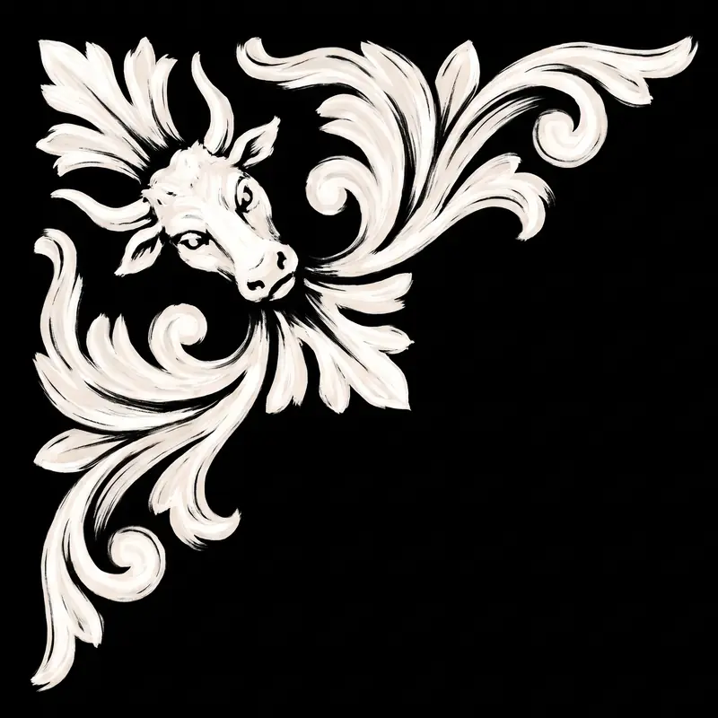
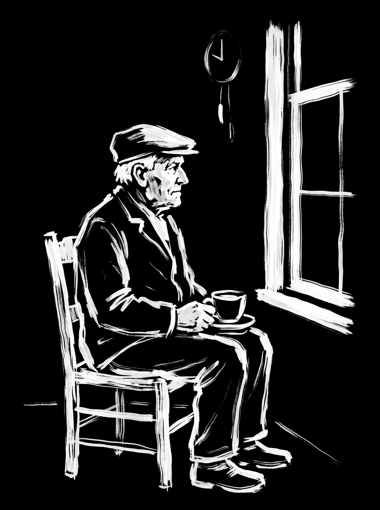

HENK
“Someone has to keep an eye on things.”
What he watches
The homelab: which services are up, which are not, what the sensors say. He reads from a small, closed set of tools and nothing else. Ask him “is everything up?” over Signal and he will tell you.
When something breaks
He opens one conversation, not a stream: a diagnosis with how sure he is, a suggested fix, and where to pick the work up. Storms collapse into one message. Chronic grumbles go to the record, not to you.
What he never does without asking
Change anything. Every write declares its tier in the code; anything not standing waits for an inline yes from the owner and fails closed on silence. Strangers get nothing, not even a read receipt.
He runs on one Raspberry Pi in a cupboard. The whole deployment is docker compose up -d.